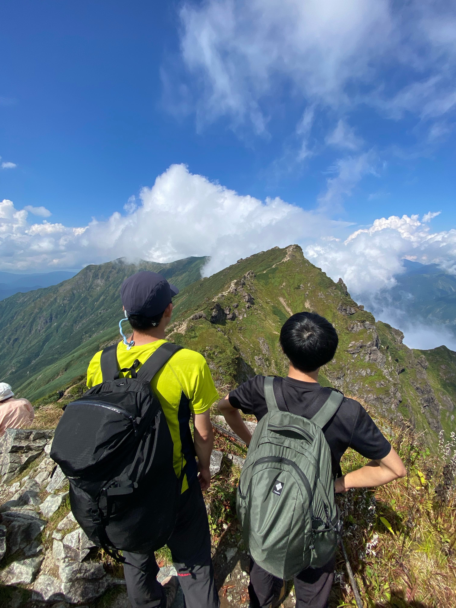

プロフィール詳細
Detailed Profile
学歴
Education
| 2021年 3月 | 鹿児島県立加治木高等学校 卒業 |
| 2021年 4月 | 筑波大学 理工学群 物理学類 入学 |
| 2025年 3月 | 筑波大学 理工学群 物理学類 卒業 |
| 2025年 4月 | 筑波大学大学院 理工情報生命学術院 数理物質科学研究群 物理学学位プログラム 入学 |
| 現在 | 同 博士前期課程 在学中 |
趣味・活動
Hobbies & Interests
-
🚴♂️ 長距離サイクリング：
ロードバイクでのツーリングが好きです。筑波大学サイクリング部に所属しており、これまで東京-大阪、大阪-鹿児島などのロングライド、富士ヒルや裏磐梯などヒルクライムをやりました。

-
⛰️ 登山：
一昨年始めた初心者です。関東を中心に、奥穂高岳や谷川岳、至仏山、浅間外輪などに登りました。


-
🎵 音楽：
いろんなジャンルの音楽が好きです。特に、オーケストラ、吹奏楽のコンサートやロックバンドのライブに行きます。